Ruby Hyperloop: isomorphic client-server structures with a sane language
Overview
This presentation is focused at showing how Hyperloop - a gem that integrates Rails with a React front-end via Opal - can be used to greatly improve our productivity as a team.
node.js's promise
With Node.js, a fast, stable server-side JavaScript runtime, we can now make this dream a reality. By creating the appropriate abstractions, we can write our application logic such that it runs on both the server and the client — the definition of isomorphic JavaScript.
- Spike Brehm, Airbnb engineer
The whole article is worth reading in its entirety: Isomorphic JS: the future of web apps
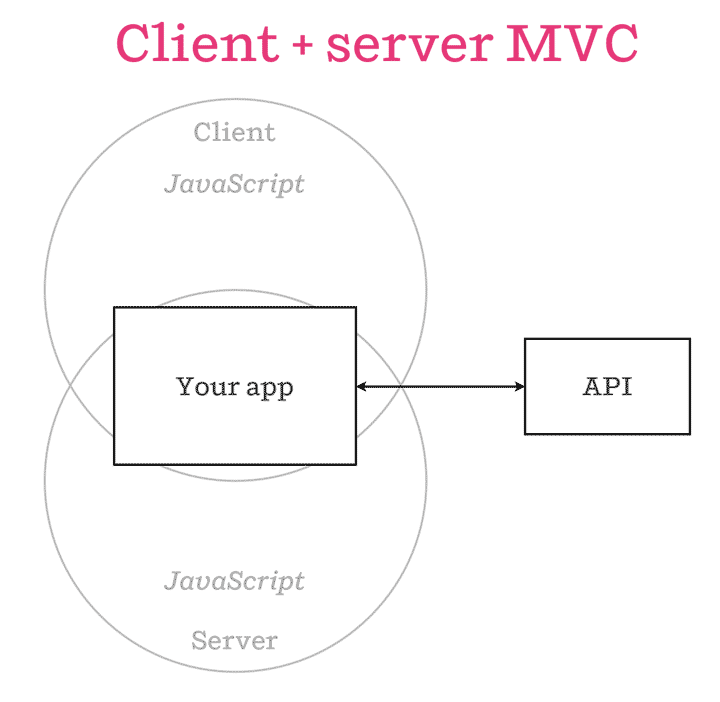
Figure 1: Isomorphic MVC
One language across server and client: same logic everywhere, no "impedance mismatch" between languages/environments.
Reality
Figure 2: Usual JS issue
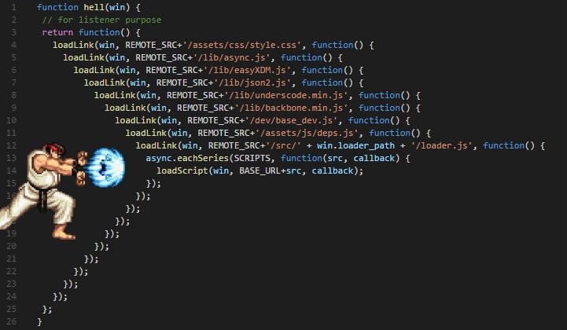
Figure 3: Hadouken code
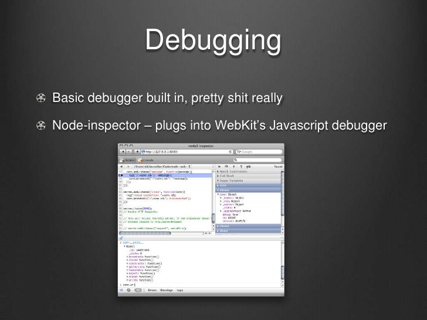
Figure 4: node.js's debugging experience
Another solution
Figure 5: Keep calm and transpile
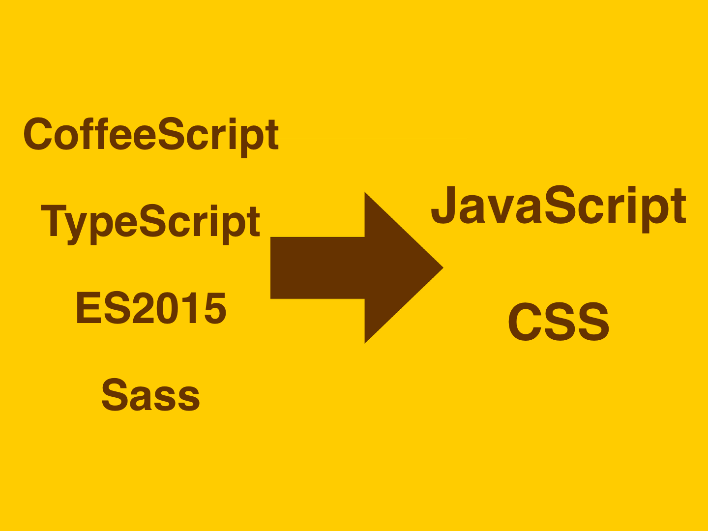
Figure 6: We've been doing this for a while…
Opal
Opal is a Ruby to JavaScript source-to-source compiler. It comes packed with the Ruby corelib you know and love. It is both fast as a runtime and small in its footprint.
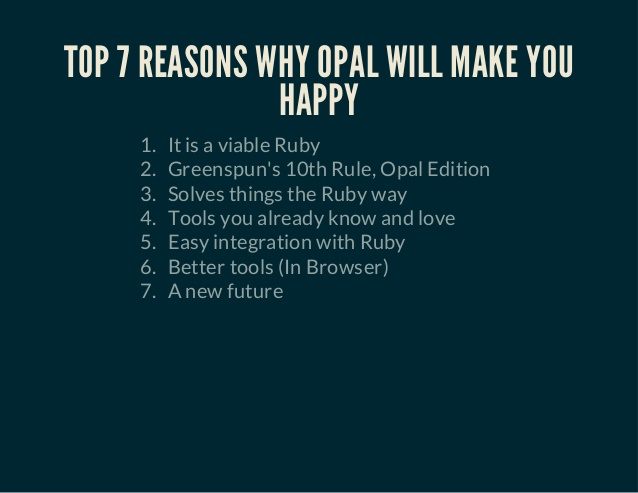
Figure 7: Why Opal will make you happy
Also, good stuff like opal-irb:
Still, it doesn't answer all our questions. How to integrate it with Rails? Can I use something like dRb over a websocket connection? How do I write React code with it? What about tests?
Enter Hyperloop
One language. One model. One set of tests. The same business logic and domain models running on the clients and the server. Hyperloop is fully integrated with Rails and also gives you unfettered access to the complete universe of JavaScript libraries (including React) from within your Ruby code. Hyperloop lets you build beautiful interactive user interfaces in Ruby.
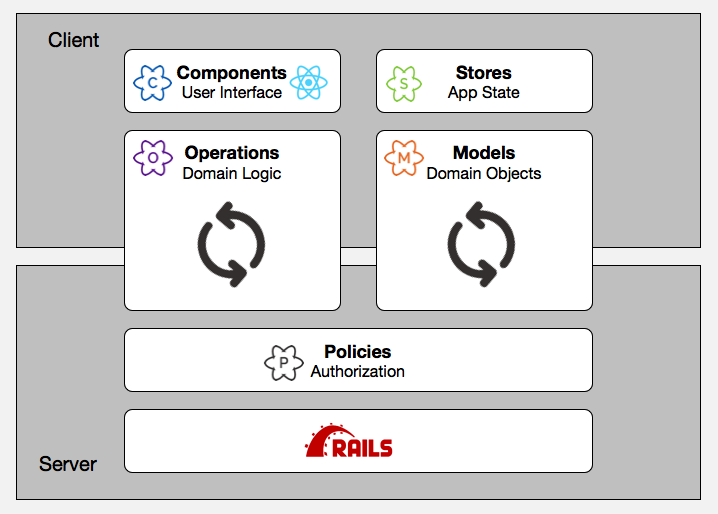
Figure 8: Hyperloop COMPS
Architecture
{kind=link}
Figure 9: Hyperloop architecture
Hyperloop tools
Architecture
Components
A Component is just a Ruby class which inherits from Hyperloop::Component. Under the covers, HyperReact uses Opal to compile this Component into JavaScript then hands it to React to mount as a regular JavaScript React Component.
As with React, there are no templates in Hyperloop, your user interface is made up of Components which mix conditional logic and HTML elements to build the user interface. Unlike React, where you code in JSX and JavaScript, Hyperloop lets you keep all your code in Ruby.
It is important to emphasize that Hyperloop gives you full access to all JavaScript libraries and components from directly within your Ruby code. Everything you can do in JavaScript is simple to do in Ruby, this includes passing parameters between Ruby and JavaScript and even passing in Ruby lambdas as JavaScript callbacks.
You can also import JavaScript libraries using NPM/Yarn and Webpack/Webpacker and have them available to your Hyperloop Components.
Stores
Stores are where the state of your Application lives.
Anything but a completely static web page will have dynamic states that change because of user inputs, the passage of time, or other external events.
For example here is Store that keeps track of time at a given location:
class WorldClock < HyperStore # Keep track of the time at multiple locations attr_reader :name attr_reader :lattitude attr_reader :longitude attr_reader :time_zone_offset def current_time WorldClock.gmt+time_zone_offset end def initialize(name, lattitude, longitude, time_zone_offset) @name, @lattitude, @longitude, @time_zone_offset = [name, lattitude, longitude, time_zone_offset] end def WorldClock.gmt unless state.gmt every(1) { mutate.gmt Time.now.gmt } mutate.gmt Time.now end state.gmt end end
Now we can create a clock and post the time to the console every minute like this:
new_york = WorldClock.new('New York', 40.7128, -74.0059, 5.hours) every(1.minute) { puts new_york.current_time }
But because it is a Reactive Store we can also say this:
# assume we have a div with id='new-york' some place in our code Element['div#new-york'].render do "The time in #{new_york.name} is #{new_york.current_time}" end
This will automatically rerender the contents of the 'new-york' div whenever the store changes.
Stores are Ruby classes that keep the dynamic parts of the state in special state variables. In other words: objects!
Models
Hyperloop gives you full access to the ActiveRecord models on the client or the server which means we can use the models directly within our Components without needing the abstraction of an API:
class BookList < Hyperloop::Component # Display each book in the catalog render(UL) do Book.in_catalog.each do |book| LI { book.name } end end end
Changes made to Models on a client or server are automatically synchronized to all other authorized connected clients using ActionCable, pusher.com or polling. The synchronization is completely automatic and magical to behold.
Developer happiness
-
hyper-console will open a new popup window, that is running an IRB style read-eval loop. The console window will compile what ever ruby code you type, and if it compiles, will send it to your main window for execution. The result (or error message) plus any console output will be displayed in the console window.
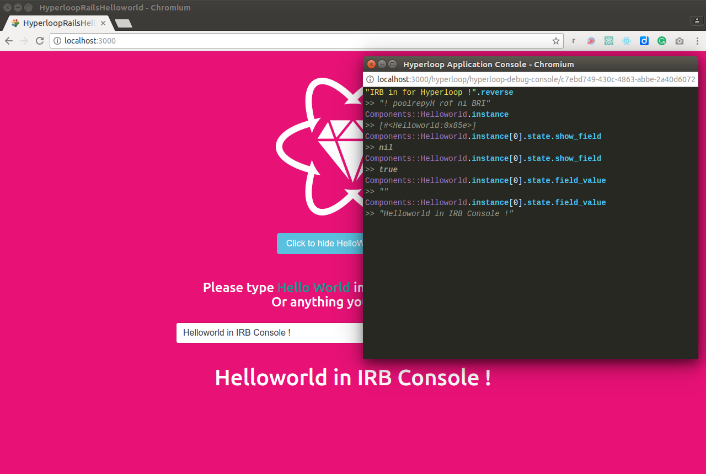
Figure 10: hyperconsole
Great for development/debugging!
-
With HyperSpec you can run isomorphic specs for all your Hyperloop code using RSpec. Everything runs as standard RSpec test specs.
Hyper-spec allows you to directly use tools like FactoryGirl (or Hyperloop Operations) to setup some test data, then run a spec to make sure that a component correctly displays, or modifies that data. You can use Timecop to manipulate time and keep in sync between the server and client. This makes testing easier and more realistic without writing a lot of redundant code.
mount 'CallBackOnEveryThirdClick' do class CallBackOnEveryThirdClick < React::Component::Base param :click3, type: Proc def increment_click @clicks ||= 0 @clicks = (@clicks + 1) params.click3(@clicks) if @clicks % 3 == 0 end render do DIV(class: :tp_clicker) { "click me" } .on(:click) { increment_click } end end end 7.times { page.click('#tp_clicker') } expect(callback_history_for(:click3)).to eq([[3], [6]])
-
Method tracing and conditional breakpoints for Opal and Hyperloop Debug
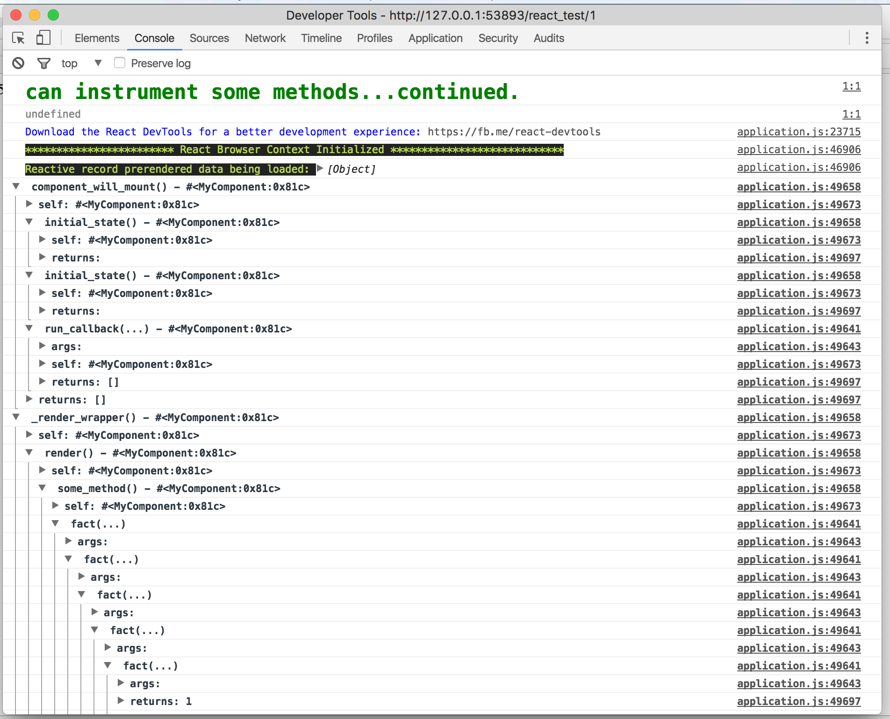
Figure 11: hypertrace
The trace log uses the javascript console grouping mechanism, so you can explore in detail the args, return values and state of the instance as each method executes.
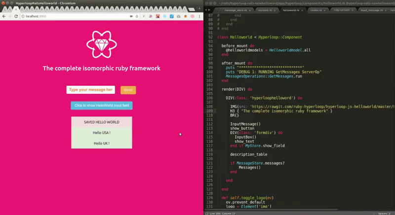
Figure 12: Opal hot reloader
Opal Hot Reloader is going to just dynamically (via a websocket connection) reload chunks of code in the page almost instaneously
Why bother with all this?
The good stuff
- Quicker iterations
- Easily share code between server and client
- Same code/business entity in the client and the server
- Full stack developers

Figure 13: Full stack developer competences
People would still have their preferred areas, but they wouldn't be siloed - overall productivity would be increased.
- It's all Ruby!
Figure 14: Most people's favorite Ruby
Figure 15: Matz on why to use Ruby
Drawbacks
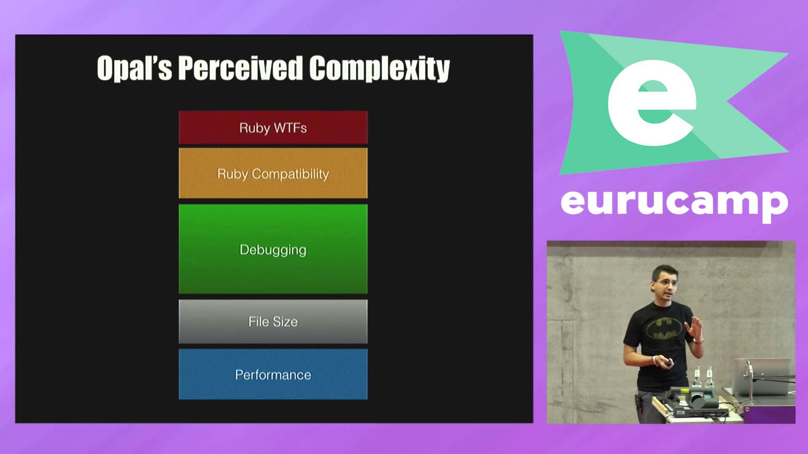
Figure 16: Opal/Hyperloop complexity
- Learning curve
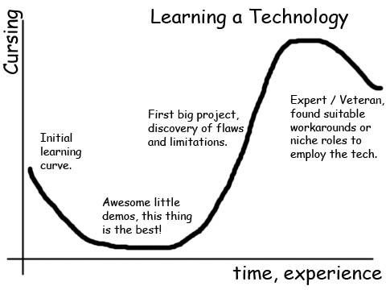
Figure 17: Learning curve for a technology
How well does it map to React / Flux?
I'd expect React devs to give their opinions on this. I honestly think this may be great for you, since it'll make it way easier to write FE code without bothering with APIs and such, but maybe it's too weird?
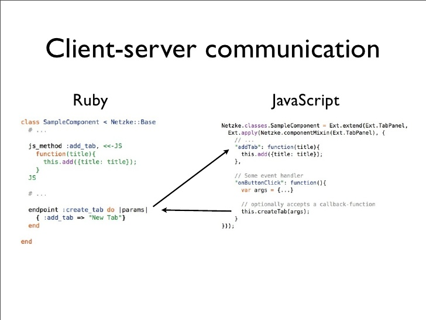
Figure 18: Client-server communication: Ruby X JS
Questions? (and maybe demo time)
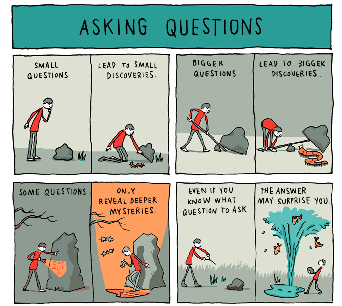
Figure 19: Questions?
How can we use this in our projects right now?